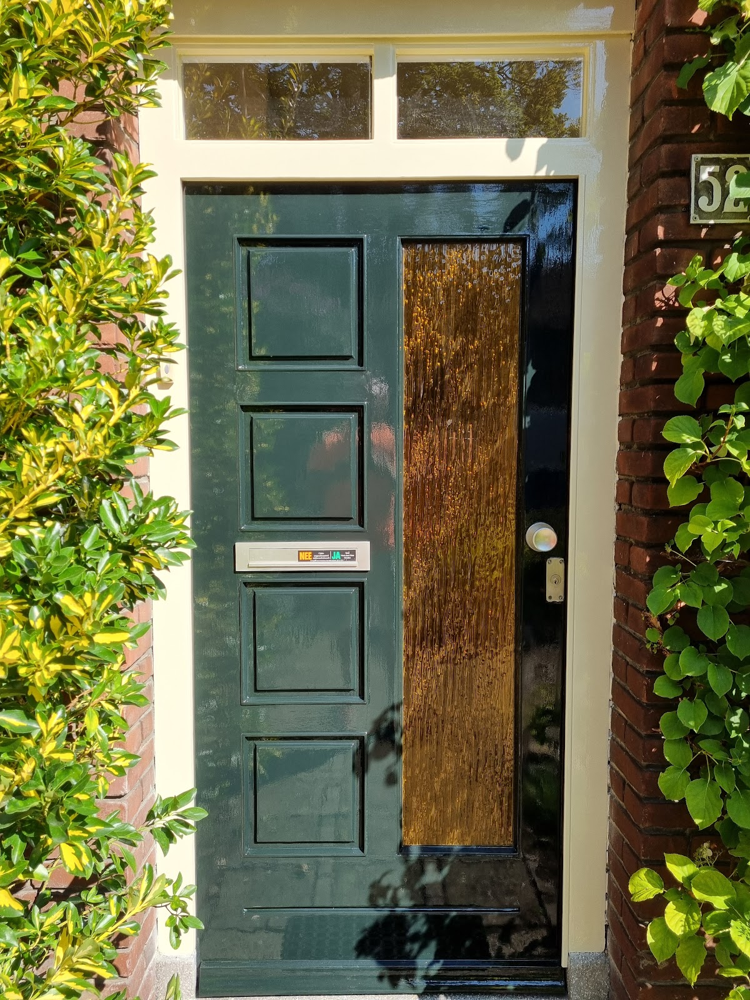
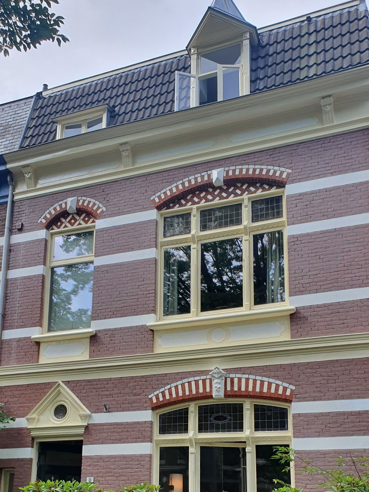
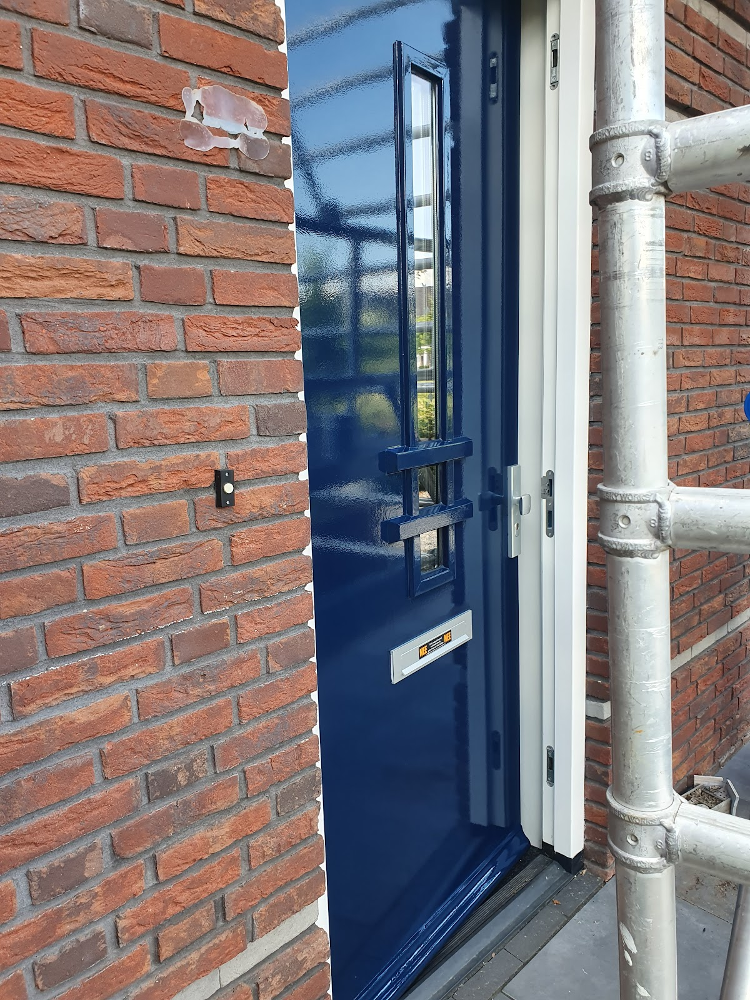
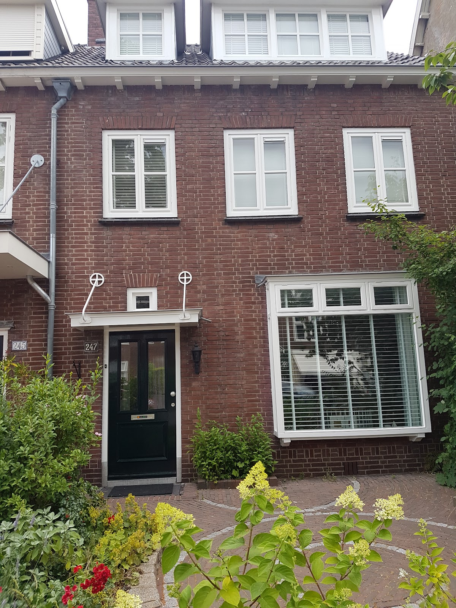
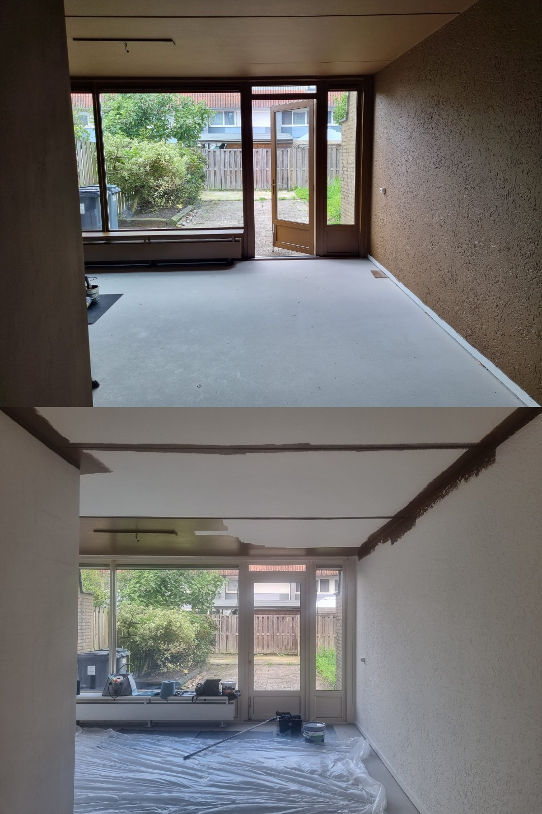
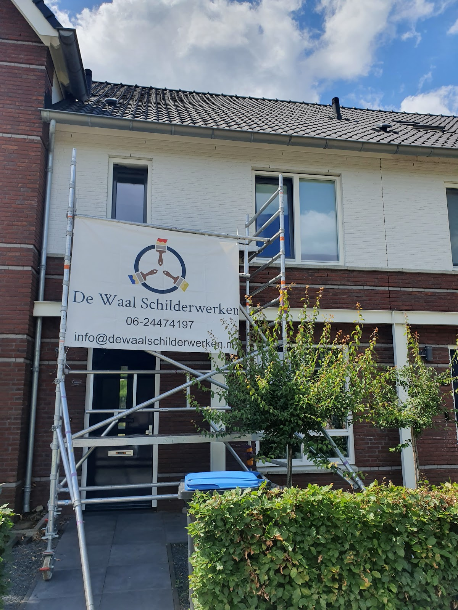

Schilder in Nijmegen en omstreken
Uw huis weer strak in de verf.
Everard en Femke schilderen binnen en buiten, van één voordeur tot een herenhuis met veel houtwerk. Houtrot repareren we eerst, daarna gronden en aflakken we met A-kwaliteit verf. Ook voor dubbel glas en Trespa kunt u bij ons terecht.
4,7 uit 5 op Google, uit 38 reviews.
Elke dag bereikbaar van 07:00 tot 18:00.

Ons werk spreekt voor zich
Een greep uit recente klussen in de regio. Van glanzend lakwerk op een voordeur tot een complete gevel met sierlijsten, en binnen een woonkamer die van donker naar licht ging.





Uw huis de volgende?
We komen graag langs om te kijken wat er nodig is, en maken een duidelijke offerte.
Bel 06 24474197 of vraag een offerte aanWat klanten over Everard en Femke zeggen
4,7 uit 5 gemiddeld, uit 38 reviews op Google.
"Everard en Femke wat een fantastisch team! Ze hebben ons herenhuis uit 1895 van binnen en van buiten helemaal in de verf gezet en dat is echt fantastisch gedaan!! Wat een vakwerk. De details en het vele houtwerk vragen aandacht en expertise, top!"
"Wij zijn ontzettend blij met het schilderwerk van De Waal schilderwerken! Ons huis ziet er weer prachtig uit. Daarnaast verliep de communicatie met Everard en Femke erg prettig en kregen wij goede adviezen waar we veel aan hebben gehad. Het was dus top, dank Everard en Femke!"
"Heel blij met Everard en Femke! Het huis ziet er weer als nieuw uit na de schilderklus. Verder is het mooi om te zien dat ze passie voor het vak hebben en met plezier mooi werk neerzetten. Ik raad hen zeker aan!"
"Everard en Femke hebben nu voor de eerste keer ons huis van buiten onderhanden genomen. Was toch een soort van groot onderhoud omdat wij het enige tijd verwaarloosd hadden. Met aandacht voor detail is alles nu weer helemaal fris. Met veel gerepareerde stukken waar hout rot was."
"Wij hebben Everard inmiddels voor meerdere schilderklussen ingeschakeld, zowel voor de binnen- als de buitenkant van onze woning. Het geleverde werk is van hoge kwaliteit en getuigt van vakmanschap. Alles is zorgvuldig en strak afgewerkt."
Eerst goed voorbereiden, dan pas verven
Een laklaag is zo goed als de ondergrond. Daarom slaan we geen stap over. We werken uitsluitend met A-kwaliteit verf van Veveo, en op verzoek met een ander A-merk. Op ons schilderwerk geven we garantie.
Goed onderhoud is beter dan herstel achteraf: het verlengt de levensduur van uw kozijnen en deuren flink.
-
1
Schoonmaken en ontvetten
Vuil en vet eraf, zodat de nieuwe laag goed hecht.
-
2
Schuren
Oude, losse verf weg en een gelijkmatige ondergrond.
-
3
Repareren
Houtrot behandelen, herstellen met twee-componenten epoxy of plamuur, en ramen en naden kitten.
-
4
Gronden
Nog een keer schoonmaken, daarna de grondverf erop.
-
5
Aflakken
De laatste laag, strak afgewerkt. Ook voor periodiek onderhoud.
Meer dan alleen een schilder
Dubbel glas plaatsen
Van enkel naar dubbel glas in uw deur of raam? Dat regelen we voor u. Ook bij ruitschade kunt u bij ons terecht: we bestellen en plaatsen het nieuwe glas en schilderen het kozijn meteen mee, zodat alles er weer als nieuw uitziet.
Trespa plaatsen
Trespa aan boeidelen en dakkapellen. Liever hout? Dat kan ook, in een geschikte houtsoort.
We werken binnen en buiten, voor particulieren, VVE's, kantoren en winkels. Werken op hoogte, monumentaal werk of regulier onderhoud: geen klus is te groot of te klein. Ook voor één voordeur of een woonkamerwand bent u welkom.
Offerte aanvragen
Vertel kort wat er geschilderd moet worden. We maken graag een afspraak om te komen kijken en sturen u een duidelijke offerte voor schilderwerk, glas of Trespa. Bij akkoord plannen we samen het werk in.
- Telefoon
- 06 24474197
- info@dewaalschilderwerken.nl
- Bereikbaar
- Maandag tot en met zondag, 07:00 tot 18:00
- Adres
- De Vlotkampweg 12, 34G
6545 AG Nijmegen - Werkgebied
- Nijmegen, Groesbeek, Lent, Oosterhout, Bemmel, Wijchen, Beuningen en omstreken